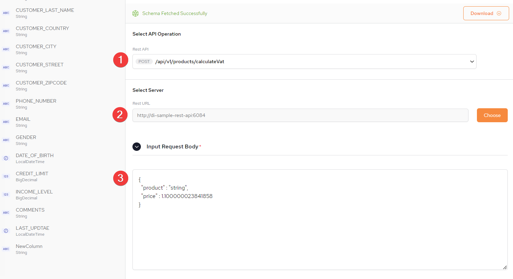

Refer to the Transformations page for a detailed overview
After completing the steps of adding tables to a pipeline (see setting up tables), click edit next to a table name:
This Configuration screen will be displayed. Click Add Transformation, to start the process of configuring Transformations:

1: Provide a name for the Transformation
2. Select Transformation Type: Calculated Column
3. Type the name of the columns to include.
4. Each transformation must be validated before adding the next. If there are multiple validations, they must all be validate alone and against each other.
5. Once validation is successful, Transformation Validated will be displayed.
6. Click this to add another transformation if required.
1: Provide a name for the Transformation
2. Select Transformation Type: Filter
3. Type the name of the columns to include.
4. Each transformation must be validated before adding the next. If there are multiple validations, they must all be validate alone and against each other.
5. Once validation is successful, Transformation Validated will be displayed.
6. Click this to add another transformation if required.
1: Provide a name for the Transformation
2. Select Transformation Type: Filter
3. Insert the URL of the External REST service configuration file
4. To download the external file, click Download
5. Once validation is successful, Transformation Validated will be displayed.
1: From the imported schema select an API Function.
2. From the drop-down select the API Operation.
3. In this example, a POST function is selected.
Select the external server where the API configuration is located and click Apply.

1: POST function previously selected
2. Server previously selected
3. Provide the Input Request Body (there is a default example provided). This is mandatory.
1: Select Columns From Response.
2. Define Table Columns Value.
3. Define the Type.
4. The is the JSON Path.
1: From the imported schema select an API Function.
2. From the drop-down select the API Operation.
3. In this example, a GET function is selected.

1: Define the API parameters
2. Select columns from response.
3. Define table column value.

Once all the Transformations have been validated click Close from the top of the Transformations setup screen:
1: List of all configured and validated Transformations.
2. Click Apply
Save the table. Refer to setting up tables for the instructions.